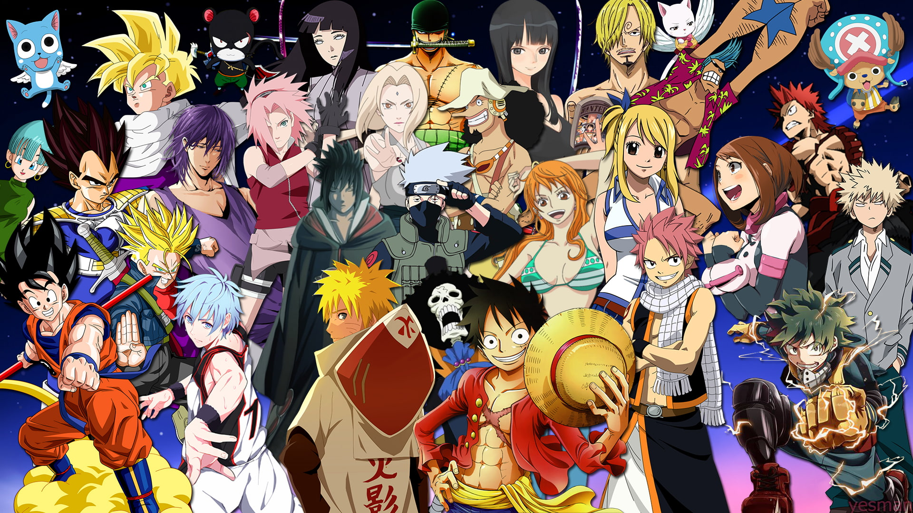
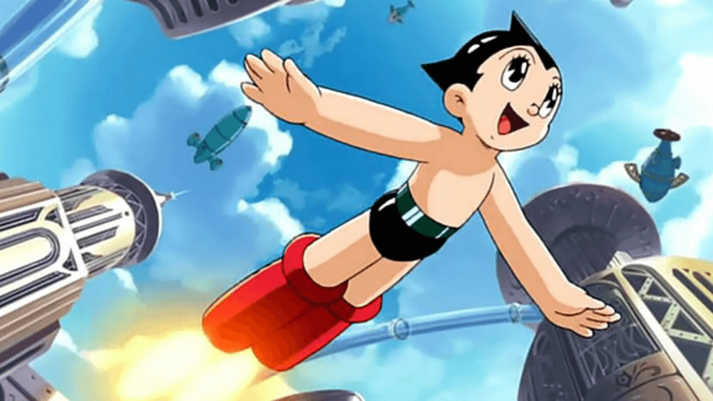
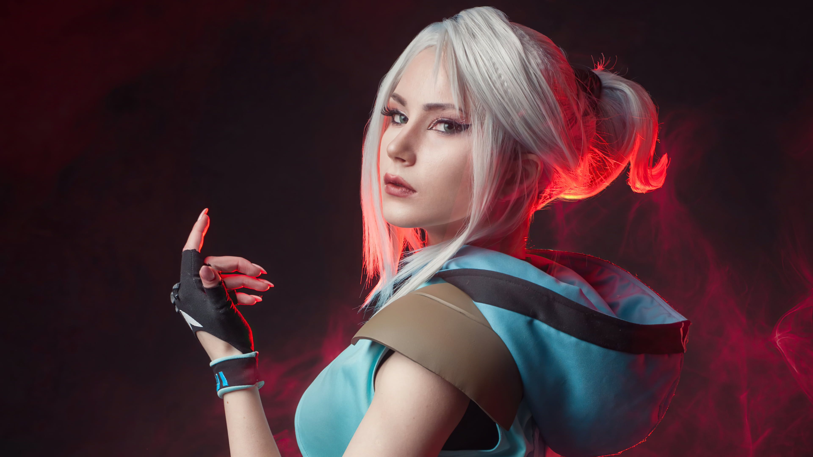

Mengenal Dunia Anime

Anime adalah gaya animasi yang berasal dari Jepang yang telah menjadi fenomena global. Dengan visual yang khas, cerita mendalam, dan karakter yang menarik, anime tidak hanya sekadar hiburan, tetapi juga karya seni yang penuh makna.
Perkembangan Anime

Sejak pertama kali muncul pada tahun 1960-an dengan Astro Boy, anime telah berkembang pesat. Saat ini, genre anime sangat beragam, seperti aksi, fantasi, isekai, romansa, hingga slice of life. Anime kini menjadi salah satu media hiburan terbesar di dunia.
Dampak Anime pada Budaya Pop

Anime tidak hanya populer di Jepang, tetapi juga memiliki pengaruh besar secara global. Event cosplay, merchandise, dan komunitas pecinta anime dapat ditemukan di berbagai negara. Anime juga menjadi inspirasi bagi banyak film dan game internasional.